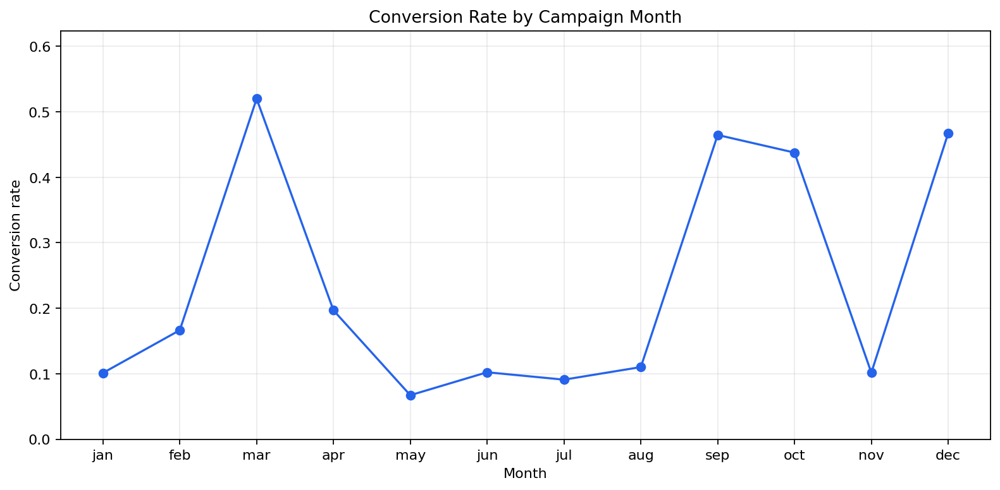
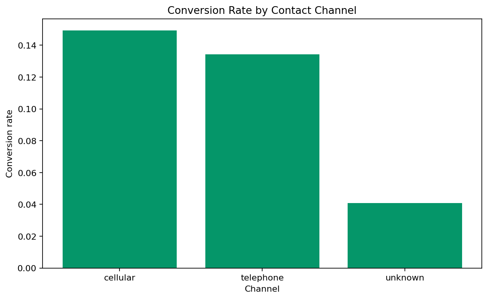
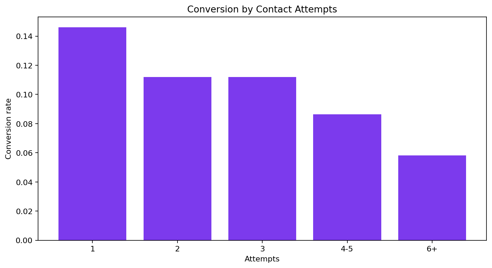

Bank Marketing Campaign Outcomes
Author: Mohammed Adeen Shaik
Review date: 11 October 2026
Research question
Which contact channels and contact-frequency groups have different observed subscription rates?
Data and provenance
UCI Bank Marketing bank-full.csv, a historical Portuguese bank campaign sample.
Source materials are linked from the repository README. Input fingerprints are recorded in the evidence manifest so a reader can identify the exact committed artifacts used in this review.
Method and analytical rationale
The subscription label becomes a binary indicator. Grouped counts give conversion numerators and denominators. Calendar month labels combine observations across years and are not a continuous time series.
Findings and interpretation
Fresh execution on 11 October 2026. The 45,211 contact records contain 5,289 subscriptions, an observed conversion rate of 11.70%. Channel rates vary, but selection differences prevent a causal claim that one channel improves conversion. Month categories pool years; the chart is a calendar-month comparison, not a time trend.
| contact | contacts | conversions | conversion_rate |
|---|---|---|---|
| cellular | 29285 | 4369 | 0.1491890046098685 |
| telephone | 2906 | 390 | 0.1342050929112181 |
| unknown | 13020 | 530 | 0.0407066052227342 |
Limitations
Call duration is known after the call and must not enter pre-contact targeting. Channel and contact-count differences are observational; they do not measure causal campaign lift.
Reproduction
Use the setup commands and input contract in the repository README. Open the notebook catalogue for annotated code and saved outputs. Keep raw records and model binaries local; public reports contain aggregate results or source-embedded figures.
Final visual results

Figure from key_visuals.ipynb, original code cell 3.

Figure from key_visuals.ipynb, original code cell 4.

Figure from key_visuals.ipynb, original code cell 5.